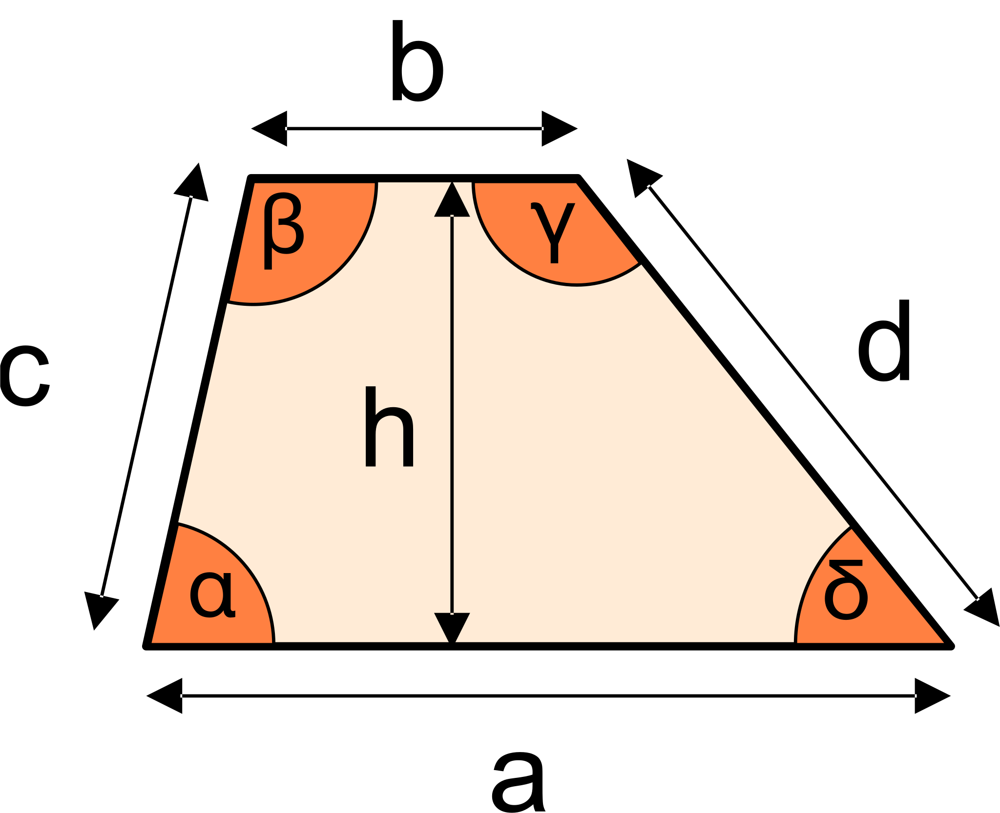

Calculo de área Trapézio Irregular

Geometria do Trapézio Irregular
O trapezoide é uma figura geométrica caracterizada por quatro lados, dois dos quais são paralelos e os outros dois não. Representando o imponente gigante gasoso Júpiter, o trapezoide simboliza a natureza turbulenta e imprevisível deste colosso cósmico. Com sua atmosfera densa de hidrogênio e hélio e tempestades violentas que rugem em sua superfície, Júpiter é um mundo de extremos que desafia a compreensão humana.